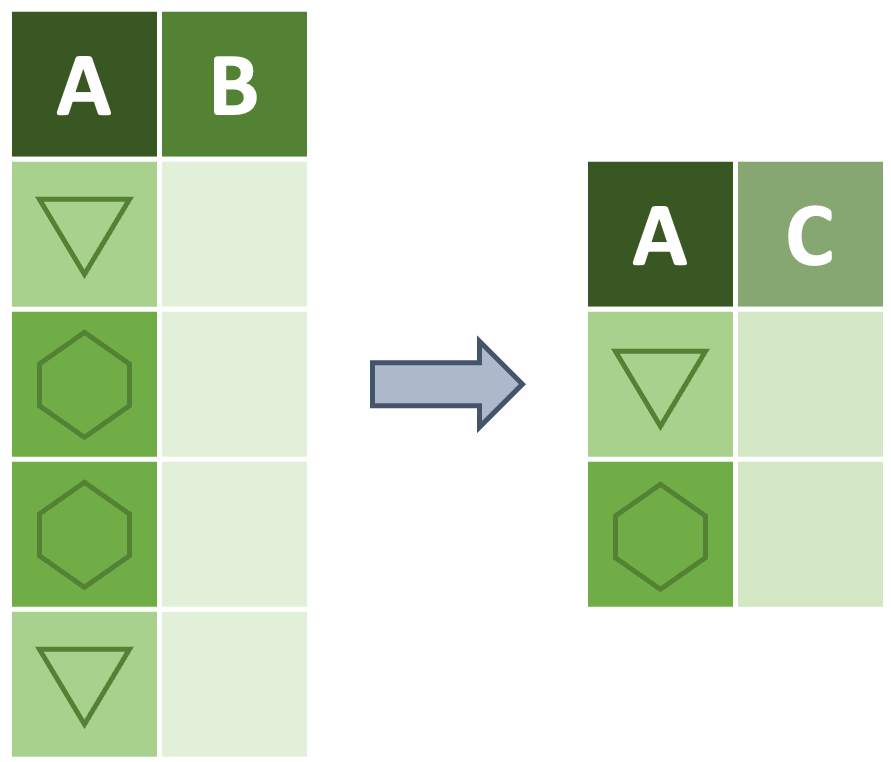

Use the pipe operator (%>%) to chain multiple functions together
Summarize data by using dplyr’s group_by and summarize functions
Pipe Operator (%>%)
Before diving into the Tidyverse functions that allow for summarization and group-wise operations, let’s talk about the pipe operator (%>%). The pipe is from the magrittr package and allows chaining together multiple functions without needing to create separate objects at each step as you would have to without the pipe.
%>% Example: Using the Pipe
Example
As in the other chapters, let’s use the “penguins” data object found in the palmerpenguins package. Let’s say we want to keep only specimens that have a measurement for both bill length and bill depth and then remove the flipper and body mass columns.
Without the pipe–but still using other Tidyverse functions–we could go about this like this:
# Filter out the NAspenguins_v2 <- dplyr::filter(.data = penguins,!is.na(bill_length_mm) &!is.na(bill_depth_mm))# Now strip away the columns we don't wantpenguins_v3 <- dplyr::select(.data = penguins_v2, -flipper_length_mm, -body_mass_g)# And we can look at our final product with `base::head`dplyr::glimpse(penguins_v3)
Using the pipe though we can simplify this code dramatically! Note that each of the following lines must end with the %>% so that R knows there are more lines to consider.
# We begin with the name of the data objectpenguins %>%# Then we can filter the data dplyr::filter(!is.na(bill_length_mm) &!is.na(bill_depth_mm)) %>%# And strip away the columns we don't want dplyr::select(-flipper_length_mm, -body_mass_g) %>%# And we can even include the `glimpse` function to see our progress dplyr::glimpse()
Note that using the pipe allows each line to inherit the data created by the previous line.
Challenge: %>%
Your Turn!
Using pipes, filter the data to only include male penguins, select only the columns for species, island, and body mass, and filter out any rows with NA for body mass.
Aside: Fun History of Why %>% is a “Pipe”
The Belgian painter René Magritte famously created a painting titled “The Treachery of Images” featuring a depiction of a smoking pipe above the words “Cest ci n’est pas une pipe” (French for “This is not a pipe”). Magritte’s point was about how the depiction of a thing is not equal to thing itself. The magrittr package takes its name from the painter because it also includes a pipe that functions slightly differently from a command line pipe and uses different characters. Just like Magritte’s pipe, %>% both is and isn’t a pipe!
Group-Wise Summarizing
Now that we’ve covered the %>% operator we can use it to do group-wise summarization! Technically this summarization does not require the pipe but it does inherently have two steps and thus benefits from using the pipe to chain together those technically separate instructions.
To summarize by groups we first define our groups using dplyr’s group_by function and then summarize using summarize (also from dplyr). summarize does require you to specify what calculations you want to perform within your groups though it uses similar syntax to dplyr’s mutate function.

Despite the similarity in syntax between summarize and mutate there are a few crucial differences:
summarize returns only a single row per group while mutate returns as many rows as are in the original dataframe
summarize will automatically remove any columns that aren’t either (1) included in group_by or (2) created by summarize. mutate cannot remove columns so it only creates whatever you tell it to.
group_by + summarize Example: Summarize within Groups
Example
By using the %>% with group_by and summarize, we can calculate some summarized metric within our specified groups. To begin, let’s find the average bill depth within each species of penguin.
# Begin with the data and a pipepenguins %>%# Group by the desired column names dplyr::group_by(species) %>%# And summarize in the way we desire dplyr::summarize(mean_bill_dep_mm =mean(bill_depth_mm, na.rm =TRUE) )
# A tibble: 3 × 2
species mean_bill_dep_mm
<fct> <dbl>
1 Adelie 18.3
2 Chinstrap 18.4
3 Gentoo 15.0
Notice how the resulting dataframe only contains one row per value in the group_by call and only includes the grouping column and the column we created (mean_bill_dep_mm)? This reduction in dimensions is an inherent property of summarize and can be intensely valuable but be careful you don’t accidentally remove columns that you want!
Let’s say we want to find multiple summary values for body mass of each species of penguin on each island. To accomplish this we can do the following:
# Begin with the data and a pipepenguins %>%# Group by the desired column names dplyr::group_by(species, island) %>%# And summarize in the way we desire dplyr::summarize(# Get average body massmean_mass_g =mean(body_mass_g, na.rm =TRUE),# Get the standard deviationsd_mass =sd(body_mass_g, na.rm =TRUE),# Count the number of individual penguins of each species at each islandn_mass = dplyr::n(),# Calculate standard error from SD divided by countse_mass = sd_mass /sqrt(n_mass) )
You can see that we also invoked the n function from dplyr to return the size of each group. This function reads any groups created by group_by and returns the count of rows in the dataframe for each group level.
Just like mutate, summarize will allow you to create as many columns as you want. So, if you want metrics calculated within your groups, you only need to define each of them within the summarize function.
Challenge: summarize
Your Turn!
Using what we’ve covered so far, find the average flipper length in each year (regardless of any other grouping variable).
Grouping Cautionary Note
group_by can be extremely useful in summarizing a dataframe or creating a new column without losing rows but you need to be careful. Objects created with group_by “remember” their groups until you change the groups or use the function ungroup from dplyr.
Look at how the output of a grouped data object tells you the number of groups in the output (see beneath this code chunk).
# A tibble: 5 × 3
# Groups: species [3]
species island penguins_count
<fct> <fct> <int>
1 Adelie Biscoe 44
2 Adelie Dream 56
3 Adelie Torgersen 52
4 Chinstrap Dream 68
5 Gentoo Biscoe 124
This means that all future uses of that pipe will continue to use the grouping established to create the “penguins_count” column. We can stop this by doing the same pipe, but adding ungroup after we’re done using the grouping established by group_by.
See? We calculated with our desired groups but then dropped the grouping structure once we were finished with them. Note also that if you use group_by and do some calculation then re-group by something else by using group_byagain, the second use of group_bywill not be affected by the first. This means that you only need one ungroup per pipe.